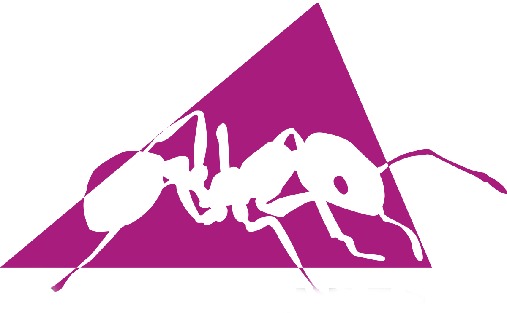

Skills
Backend Technologies
Java
Spring Boot
Node JS

Python
Front-end Technologies
HTML
CSS
JS
jQuery

Angular
Bootstrap
Build Tools

Maven

Apache ANT
Databases
MySql
Maria DB
Oracle DB

Postgres
Code Revision Tools
GIT
Tortoise SVN
Perforce
Code Verification Tools
SonarQube
Fortify
Deployment Platforms
PCF

AWS
Messaging Sub-Systems
RabbitMQ
Apache Kafka